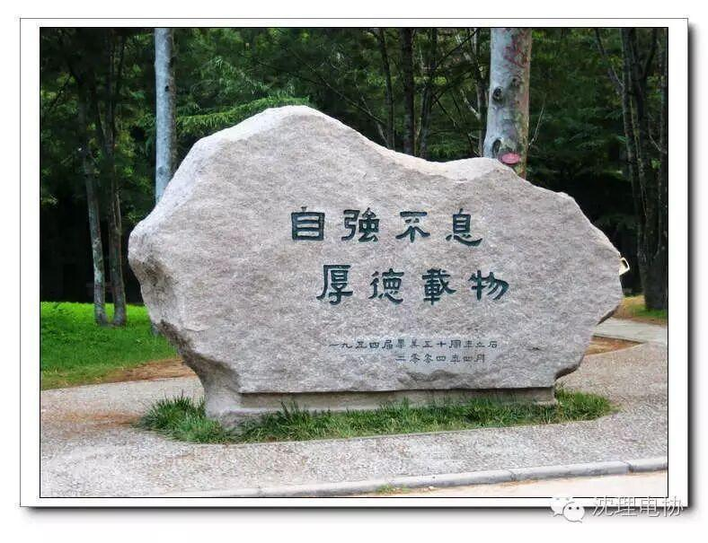
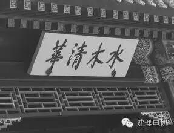
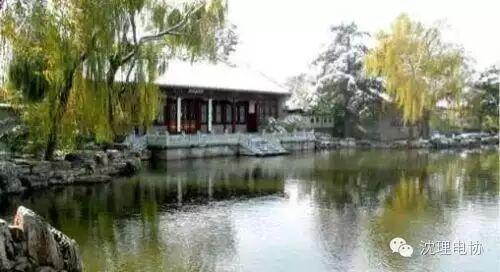

观点1：我说说我的经历吧。
大二开始准备，上网查信息，看攻略，买书。大三开始每天早7点到图书馆，要十点回寝室睡觉，午休一小时(中午不睡，下午过了三点根本没精神，浪费一下午)五一十一都没回家，暑假也是在学校旁边住房复习。我是一个二本院校学生，考的是中国人民大学金融专硕。我对天发誓，在将近一年的时间里，我放弃了所有娱乐，手机放寝室(经常有人打电话我不带手机接不到后来除了10086真的没人搭理我了)关闭了朋友圈和空间，注销了人人，不太重要的课程也基本能逃就逃了。高数三的书我整整抄写了两遍，100也A4纸用的所剩无几。英语用有道词典做单词背诵练习。专业课的书都要翻烂了。
听到这里如果你认为这是一个只要努力就会有好结果的励志故事那么你就错了，最后我还是没考上。当时考了363分，英语没过线49分。
这世上不是人人都平等的，首先智商就有差距。而对于像我这样智商平平的人貌似在勤奋也没啥用，但是除了勤奋，我们还有什么条件可以与别人挣扎一下呢?!毕竟，努力吧，万一有一天老天爷一不留神或者瞎了眼呢。
前一阵在网上看到一段话我感觉很对:在你身边总有人比你聪明，个子比你高，女朋友比你的漂亮，家里比你家富裕，什么都比你好，他们的出现就是为了证明人是有区别的，即使你偶尔打败过他们一两次，这一辈子大概你也总是仰望他们。人生就是这样。
所以总结起来，衡量一下你自己的潜力，毕竟只有你自己了解你自己。我不建议一般学校的人去考清华北大这样的学府，不是说没有斗志，也不是要随波逐流放弃自己，而是在自己最大能力的范围内争取到最好的，那些长在树尖上的果子，很大一部分属于高个子的人(不要以为只有矮个子会爬树)
观点2：本人没有亲身经历，只说一个身边的例子，我一个学长的真人真事!!本人不才，志愿没报好，超过录取线50多分考上一所曾经牛逼的普通二本!扯远了，为了交代背景!我学长，上了这所学校，心有不甘，专业是工科类，不喜欢!于是人家直接找到领导，说他准备考研，请求领导给他开绿灯，允许他挂科，他全部精力去考北大的法学(应该是吧，反正是很难考的文科类)，领导蒙了，一个普通二本的工科生，考北大的文科研究生!闻所未闻，经不住他的请求，领导开了绿灯，大意是如果他考上，不及格的挂了科的给他补考过，平时分数尽量照顾他。如果考不上，那就正常对待!那个时候学长才刚开始他的大一!后来学长每天就是开始了他的北大考研准备，大四那年，他参加了考试!最终，神奇的被北大录取!堪称牛人!

观点3：我本科哈尔滨一屌丝二本，学的软件，大学四年基本就是荒废，最后一年工作太不好找，选择考研，报的哈工大，结果打了260分，13年时候我班最好的工作是每个月6000，大家还羡慕的不行，后来毕业，自己租个找房子每天去哈工大打游击，让人撵，每天9点到正心楼，十点回去，最后358成功考到计算机，两年下来，来北京工作，有户口，觉得最大感触就是要敢想，然后敢做，其实没有什么是做不成的。
观点4：看到这种问题，总是一声长叹。我的求学之路应该是不幸中的万幸，不幸在于大学考了个渣渣的民办三本，庆幸的是自己这些年一直努力，考研跨专业考了个普通的985学校，考博又考到全国专业排名第一的985院校，如今选择在清华做博后，虽然博后算工作性质，但好歹圆了自己在清华呆一呆的梦想。。。一路走来，最大的感触就是好累，还有就是大学在个渣渣学校真的荒废了，来好大学发现小孩子都在考雅思托福，准备出国，而我们那会儿考六级一个班都没几个人过，更别说出国了，我那会儿最大的梦想就是一个月拿3000块就烧高香了觉得，现在想想哈哈哈。所以，看你怎么规划人生吧，读个差大学意味着你要付出比别人更多的努力，当然，读书不是唯一的出路，不过在国内这种阶层固化如此严重的环境下，没个有钱的爹，读书也许算是一条较为便捷的通往上层的路吧。

观点5：说实话，学校跨度太大很难。在清华北大或者其它国内一流大学的一流专业，常有说法：本科生比硕士生厉害，硕士生比博士生厉害。无他，很多厉害的本科生都出国深造或者本科毕业就有了一份好工作了。谈谈本人经历，国内还算知名的211非985大学土木工程专业，那几年也是全国土木最火的几年，后来考研报了同济，并且考上了。但是我感觉，复习的经历比高考还苦。因为竞争太激烈，同济土木考研常会有一批400分以上的(尽管建筑类专业已不再热门)。而且与高考不同，考研没有人逼你教你，纯粹是靠自己的意志自习，遇到不懂和几个同学商量解决(我没报补习班，觉得没必要)。当时我是和其他两个同学一起复习，三人轮流每天6点起来自习室占座，早8点到11:30，下午1:30一直到晚上10点回。11点熄灯，一小时洗漱加玩会电脑看看新闻。过程的确很痛苦不想再经历第二次，因为你不知道自己究竟能不能考上，心里总是被压着。所以，如果吃不了苦，真的别去做跨度太大的事情，很有可能结果会让你失望。不过一个坚持的复习过程也是人生一段财富，起码学会了发现并解决问题和不惧困难之道。社会上还是有很多单位是本科宿命论，有些事的确还是循序渐进的好。

观点6：其实这个问题是要看专业和方向的，说些自己的感受。有些专业或行业是技术导向的，比如医学、软件等，能做与不能做可以快速的做区分，这类企业或学校招人可能对第一学历相对不太看重(但肯定还是好学校的多些，毕竟他们能力平均偏高);还有些专业是经验导向的，比如投行，工作内容并不复杂，但是对学历有非常严格的要求，我们部门招人要求本科重点985以上，研究生清北以上。所以大家在选择考研与否的时候，请务必先了解自己的专业和行业特性。
小编寄语： 梦想，是坚信自己的信念，完成理想的欲望和永不放弃的坚持，是每个拥有她的人最伟大的财富。让梦想从沈理启航。